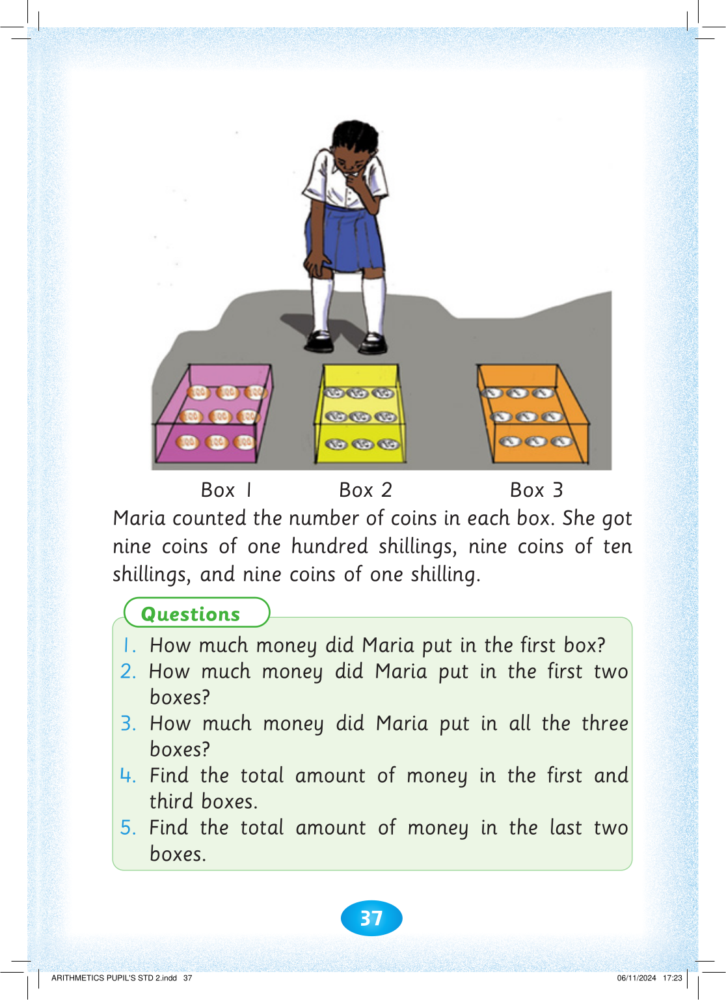
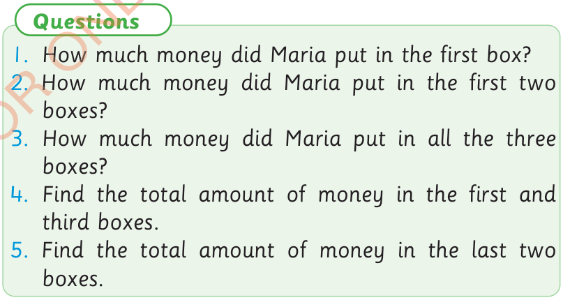

37



Box 1

Box 2
Box 3
Maria counted the number of coins in each box. She got nine coins of one hundred shillings, nine coins of ten shillings, and nine coins of one shilling.
Questions
1. How much money did Maria put in the first box?
2. How much money did Maria put in the first two boxes?
3. How much money did Maria put in all the three boxes?
4. Find the total amount of money in the first and third boxes.
5. Find the total amount of money in the last two boxes.


ARITHMETICS PUPIL'S STD 2.indd 37
06/11/2024 17:23